TDA (Thermogravimetry Data Analysis)
Table of Contents
1. 简介
TDA 是一款热重曲线分析软件，提供高效的热重作图和分析功能。
2. 软件功能界面
2.1. 绘图界面
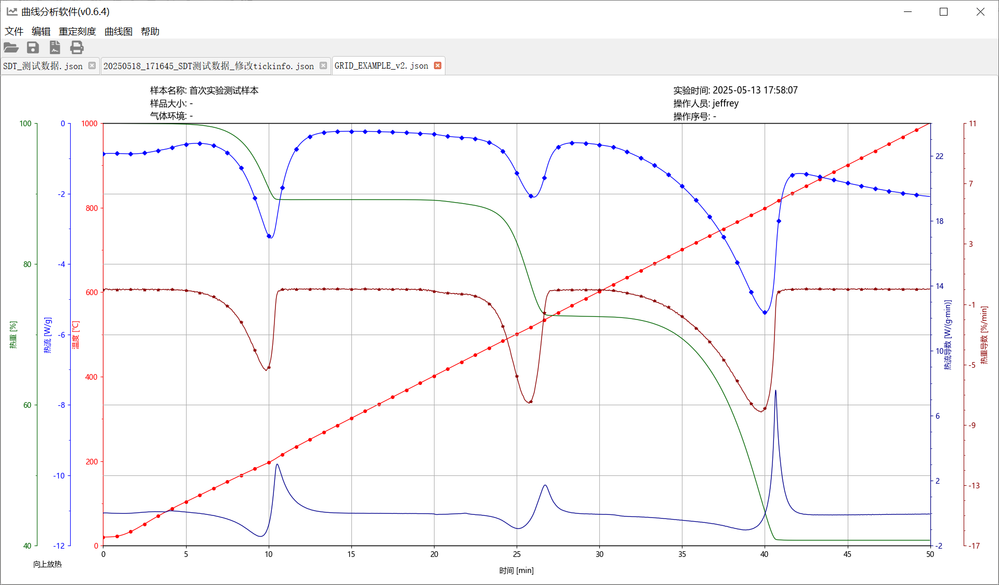
2.2. 图片缩放
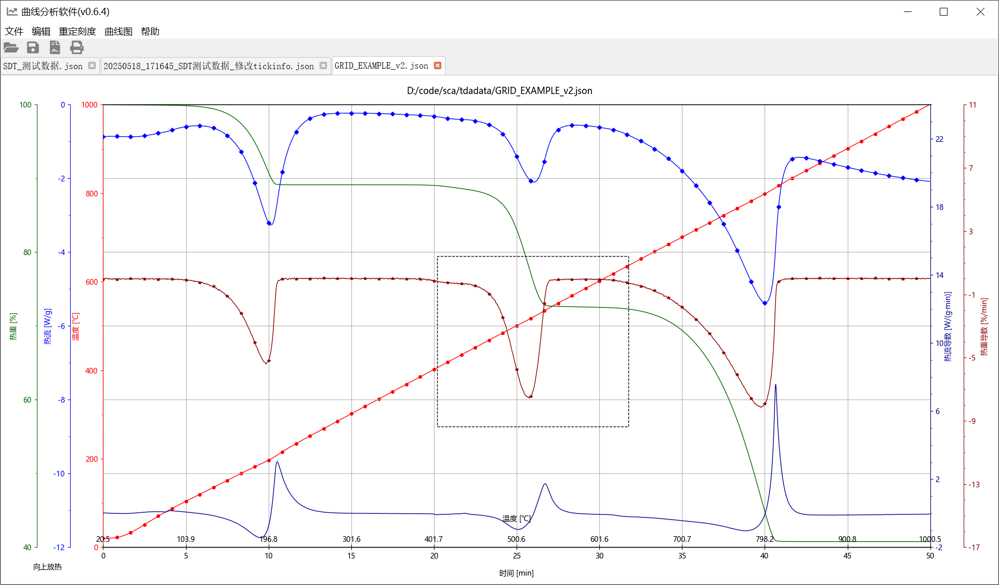
2.3. 编辑信号
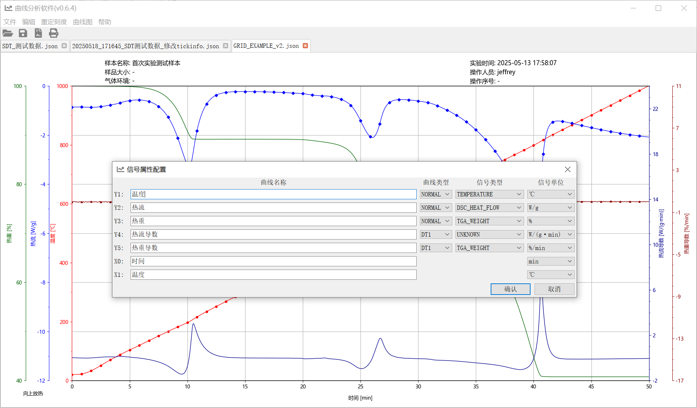
2.4. 轴，曲线，网格可见性
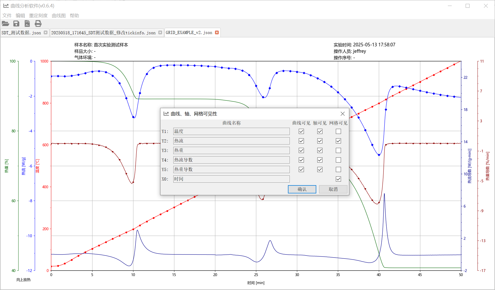
2.5. 表格界面
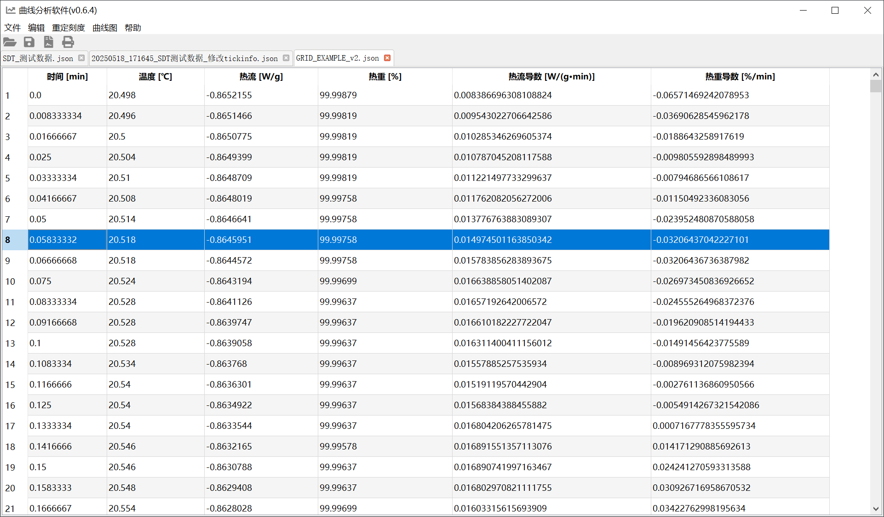
2.6. 导出文件
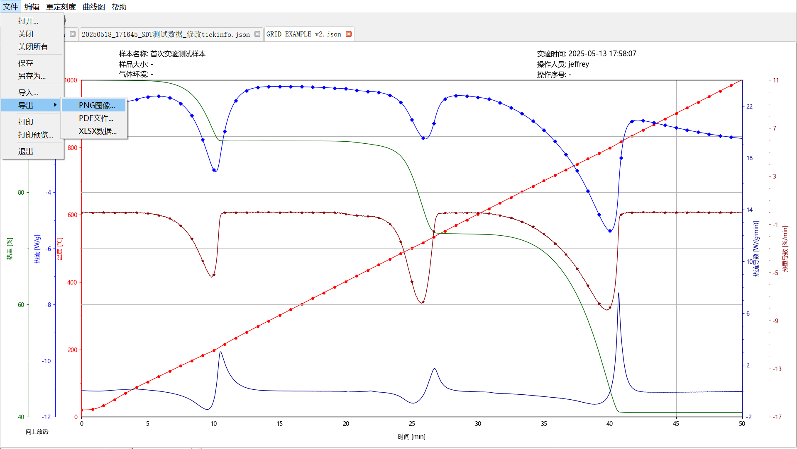
2.7. 操作日志
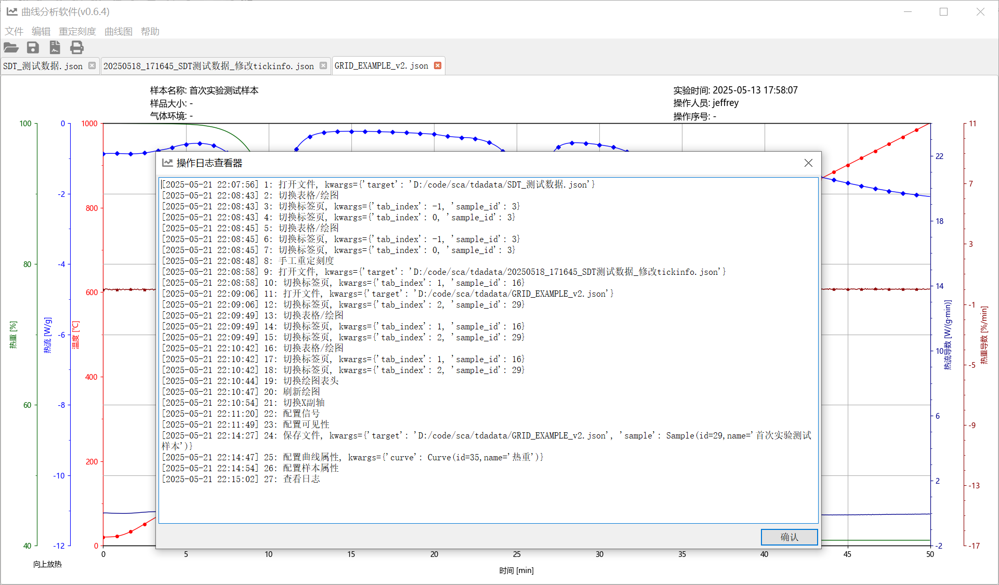
3. 作者
- Email: hujinghui@buaa.edu.cn
TDA 是一款热重曲线分析软件，提供高效的热重作图和分析功能。
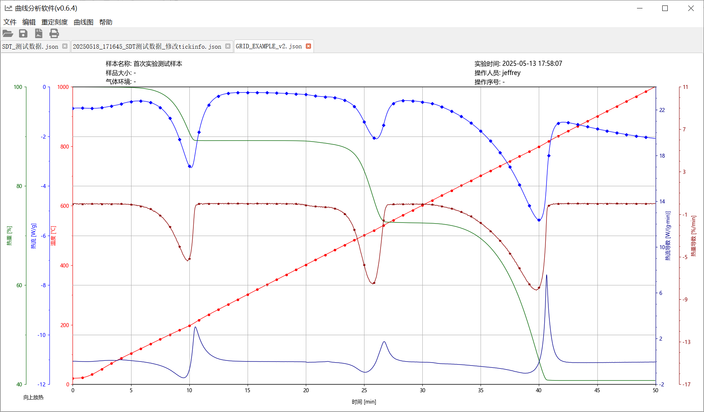
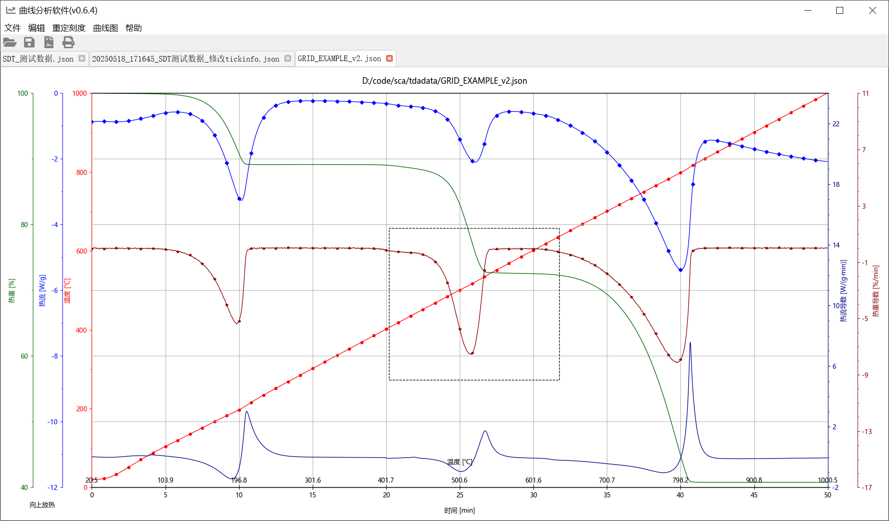
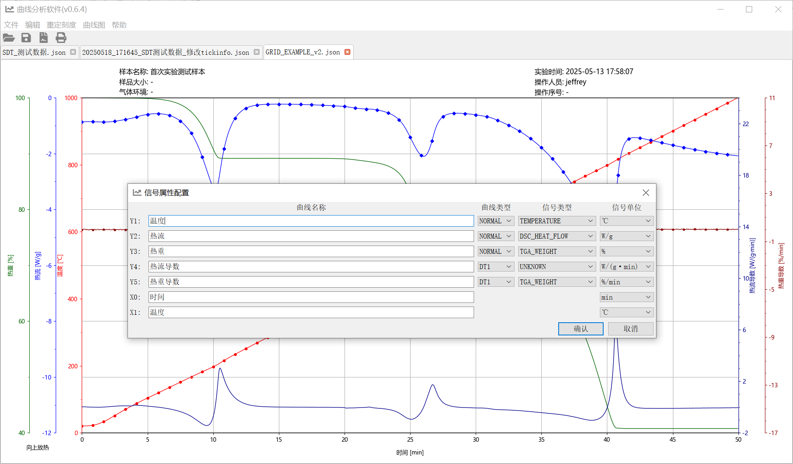
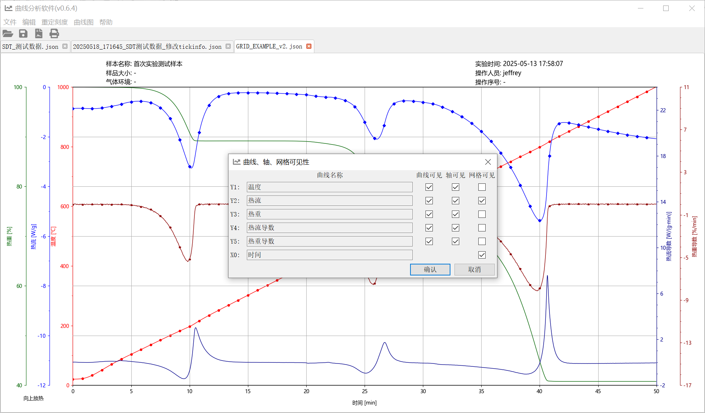
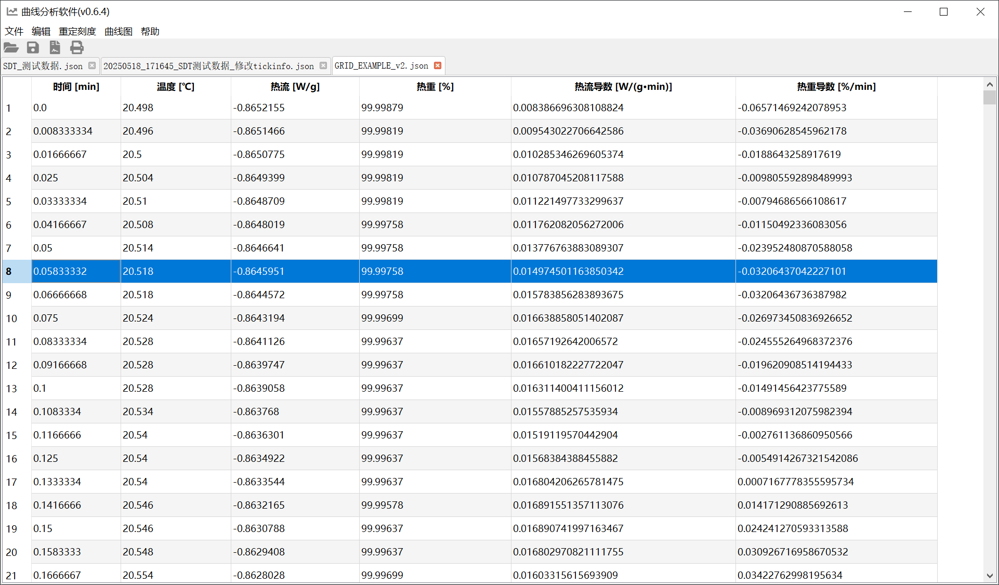
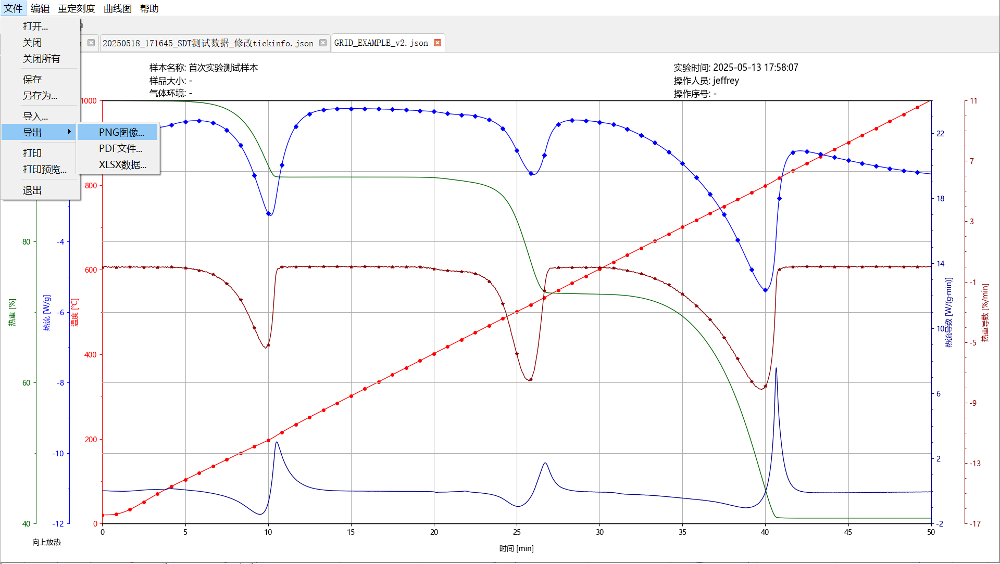
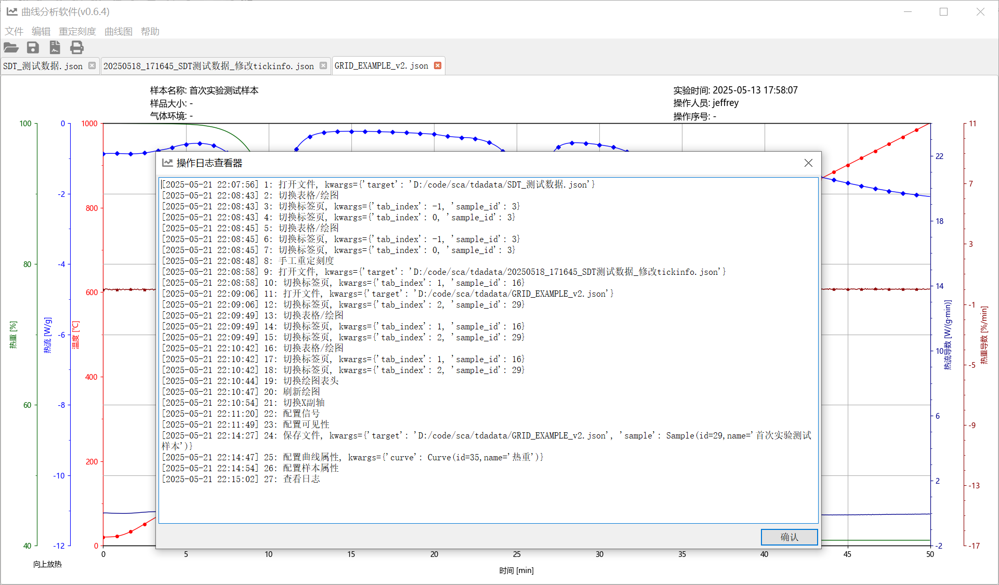